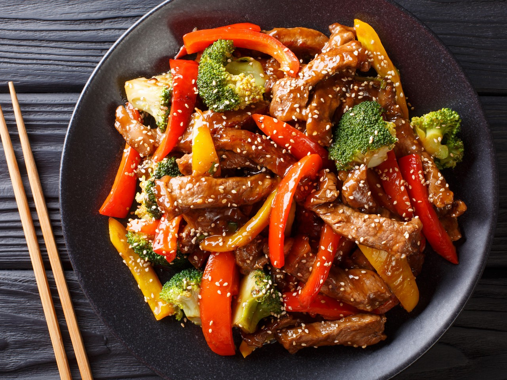

Pollo/Bistec a la teriyaki

Descripcion
Rico Pollo o Bistec estilo teriyaki con pimiento morron, calabacita y chile poblano
Ingredientes
- Pollo o Bistec, depende de su preferencia
- Salsa de Soya
- Un diente de ajo
- 2 Pimientos Morrones
- 2 Chiles Poblanos
- 3 Calabazas Verdes
Preparacion
- Cortar todas las verduras: las calabazas se cortaran en rodajas finas, mientras que los chiles y pimientos se cortaran en tiras, asegurarse de quitar las semillas
- Aplastar el ajo y remover la cascara, despues picar el ajo finamente en trocitos
- Añadir todo lo anterior en una sarten con aceite y sal al gusto y poner a fuego medio. asegurese de poner una tapa sobre los ingredientes para que se cocinen mejor
- Cortar la carne en tiras y añadir a la sarten junto con las verduras
- Una vez que la carne y las verduras esten bien cocinadas añadir suficiente salsa de soya y cocinar por unos minutos mas
- Una vez que este listo emplatar junto con arroz
Regresar a pagina principal